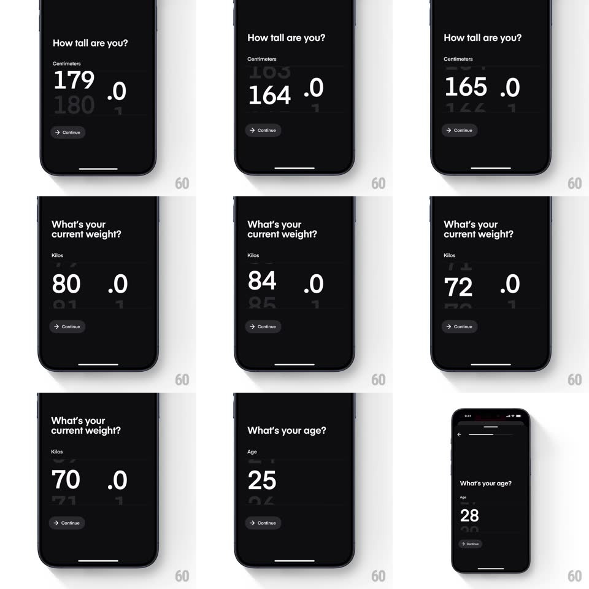

Media
Frame-by-frame

Rebuild this interaction 1:1: Dropset's onboarding scroll picker - dark single-question screens ("How tall are you?", "What's your current weight?", "What's your age?") where a huge numeral is picked by vertical scroll, neighboring values ghosting above and below, with a small Continue pill.

Rebuild this interaction 1:1: Dropset's onboarding scroll picker - dark single-question screens ("How tall are you?", "What's your current weight?", "What's your age?") where a huge numeral is picked by vertical scroll, neighboring values ghosting above and below, with a small Continue pill.
## Integration
Integration: stack-agnostic spec - springs given as stiffness/damping, timed motions as duration + curve; map every value to your framework and animation library of choice.
## Scene
Black screens, back chevron + progress bar top: bold question, a small gray unit label ("Centimeters" / "Kilos" / "Age"), then the picker - a giant white value ("180 .0") with the previous/next values visible above and below, heavily dimmed and smaller. Continue pill bottom.
## Motion spec
Pattern: vertical drum picker with scale/fade falloff.
- Scroll the numeral column: values glide vertically 1:1 with the drag; the centered value is full white at full size, values one step away scale to ~60% and fade to ~25%, two steps away nearly vanish.
- Release: snaps to the nearest whole value (spring ~340/24, ~300ms) with a soft haptic tick per passed value.
- The decimal part (".0") stays pinned at a fixed size beside the integer, not scaling with it.
- On snap: the settled value pops slightly (scale 1 -> 1.04 -> 1, spring ~420/20).
- Continue fades from gray to white once the value changes from its default.
## Calibration
- The ghosted neighbors are always visible - the drum never hides its neighbors behind a mask.
- Question and unit label never move; only the numeral column scrolls.
## Reduced motion
Drum scrolls without scale/fade falloff; values snap without pop.
## Don't miss
- The units differ per question (cm, kg, years) and the label swaps with the question via a 200ms crossfade.
- The picker's resting position centers a default (180 cm / 80 kg / 25) - not zero.